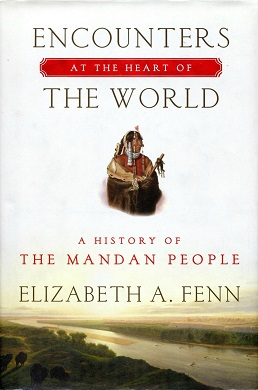
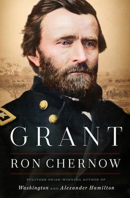
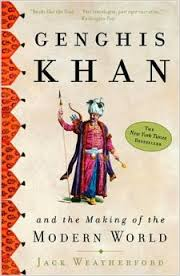
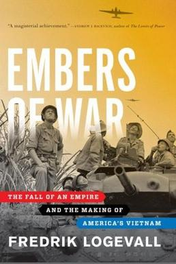

History Books

Encounter at the heart of the world
By Elizabeth A. Fenn
A book that radically changes our understanding of North America before and after the arrival of Europeans.
Encounters at the Heart of the World concerns the Mandan Indians, iconic Plains people whose teeming, busy towns on the upper Missouri River were for centuries at the center of the North American universe. We know of them mostly because Lewis and Clark spent the winter of 1804–1805 with them, but why don't we know more? Who were they really? Read more

Grant
Author:- Robert chernow
Grant, by Robert Chernow, is an exhaustive biography of the 18th President of the United States. Grant is perhaps better known as the commander of all Union forces at the end of the Civil War and is credited with defeating Robert E. Lee and the Confederate Army. In writing this book, Chernow argues that the common perception is overly critical. Most notably, he argues that Grant’s reputation for drinking and corruption is overstated. In reality, Grant did struggle with alcoholism, but worked hard to control it throughout his life. Read more

Guns, Germs, and Steeld
Author:- Jared Diamon
The book attempts to explain why Eurasian and North African civilizations have survived and conquered others, while arguing against the idea that Eurasian hegemony is due to any form of Eurasian intellectual, moral, or inherent genetic superiority. Diamond argues that the gaps in power and technology between human societies originate primarily in environmental differences, which are amplified by various positive feedback loops. When cultural or genetic differences have favored Eurasians (for example, written language or the development among Eurasians of resistance to endemic diseases), he asserts that these advantages occurred because of the influence of geography on societies and cultures (for example, by facilitating commerce and trade between different cultures) and were not inherent in the Eurasian genomes. Read more

Genghis Khan and the Making of the Modern World
Genghis Khan and the Making of the Modern World
Author:-Jack Weatherford
Genghis Khan and the Making of the Modern World is a nonfiction book divided into three parts and dealing with the early life and rise to power of Temujin, the man who would become known as Genghis Khan. The text details his conquests and the establishment of the Mongol Empire, and the changes undergone by the empire after his death, and up until its collapse. Throughout, Weatherford makes the argument that the Mongol Empire played a pivotal—and underappreciated—role in shaping the modern world as we know it. The historical narrative is a product of Weatherford’s own research in the wilderness of modern Mongolia as well as his work with the medieval Read more

Embers of War: The Fall of an Empire and the Making of America's Vietnam
Author:-Fredrik Logevall
The struggle for Vietnam occupies a central place in the history of the twentieth century. Fought over a period of three decades, the conflict drew in all the world’s powers and saw two of them—first France, then the United States—attempt to subdue the revolutionary Vietnamese forces. For France, the defeat marked the effective end of her colonial empire, while for America the war left a gaping wound in the body politic that remains open to this day.
How did it happen? Tapping into newly accessible diplomatic archives in several nations and making full use of the published literature, distinguished scholar Fredrik Logevall traces the path that led two Western nations to lose their way in Vietnam. Embers of War opens in 1919 at the Versailles Peace Conferen Read more